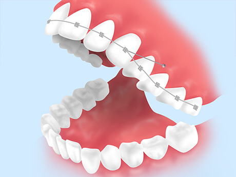

さまざまな矯正治療法に対応しています
矯正治療というと、固定式の金属製の装置を思い浮かべる方が多いかもしれません。しかしそれ以外にも、矯正装置には目立ちにくいもの、取り外せるものなどさまざまな種類があります。
こちらでは町田市の歯医者「ワイズデンタルオフィス」で対応している、歯列矯正の種類と費用をご紹介します。併せて治療の流れについてもご案内しますので、参考にしてください。
矯正治療の種類
アクアシステム（マウスピース型カスタムメイド矯正・薬機法対象外）
| 特長 | 注意点・治療時のリスク |
|---|---|
目立ちにくい透明のマウスピース型の装置を使った矯正治療です。金属のワイヤーやブラケットなどがなく、自然な見た目が特徴です。まわりの目を気にせず矯正治療を受けられます。 ※歯並びの状態によっては、ほかの矯正治療と組み合わせて行う場合もあります。くわしくはお気軽にご相談ください。 |
|
| 治療期間 | |
|---|---|
| 治療費用 |
セラミックブラケット
| 特長 | 注意点・治療時のリスク |
|---|---|
もっともポピュラーな矯正装置「メタルブラケット」と同じしくみで、歯に付ける小さな装置「ブラケット」が白いセラミックで作られたものを使用する治療法です。 ブラケットに通すワイヤーも白いものが選べますが、金属のワイヤーのほうが比較的治療期間を短縮できます。 |
|
| 治療期間 | |
|---|---|
| 治療費用 |
メタルブラケット
| 特長 | 注意点・治療時のリスク |
|---|---|
| もっともポピュラーといえる、金属製のブラケットとワイヤーを用いる矯正治療です。目立つ点がデメリットですが、金属製のワイヤーで歯に強い力をかけられるため、治療が早く完了します。比較的安価であり、多くの方に選ばれています。 |
|
| 治療期間 | |
|---|---|
| 治療費用 |
インプラント矯正
| 特長 | 注意点・治療時のリスク |
|---|---|
|  | |
矯正用の小さなインプラントを埋め込み、それを固定源にして歯を移動させる治療法です。生体親和性の高いチタン製のインプラントが顎の骨にしっかりと固定され、安定した力で歯を移動させられます。 一般的なワイヤーを用いた矯正治療で2～3年かかる症例も、インプラント矯正ならその半分くらいの期間に短縮できます。 |
|
| 治療期間 | |
|---|---|
| 治療費用 |
コルチコトミー矯正
| 特長 | 注意点・治療時のリスク |
|---|---|
「一度切った骨は、回復後に以前より丈夫になる」という体の性質を利用した矯正治療です。歯の土台である顎の骨の表面に、あえて外科手術でヒビを入れ、人が持つ自然治癒力を促しながら、通常より短期間での矯正治療を可能にします。 日本では、まだ行える歯科医院は多くないのが実状ですが、歯科先進国であるアメリカでは多く行われているメジャーな矯正方法ですので、ご心配は不要です。 |
|
| 治療期間 | |
|---|---|
| 治療費用 |
矯正治療の費用について
基本料金
| カウンセリング | ¥5,000 |
|---|---|
| 診査・診断 | ¥30,000 |
小児矯正
| メタルブラケット | ¥300,000 |
|---|---|
| セラミックブラケット | ¥400,000 |
成人矯正
| メタルブラケット | ¥650,000 |
|---|---|
| セラミックブラケット | ¥750,000 |
| マウスピース（アクアシステム） 片顎 両顎 |
¥350,000 ¥560,000 |
※第1期（小児矯正）から受けられている患者様は、成人矯正を差額分の料金で受けていただけます。
矯正治療の流れ
STEP01 【治療開始前】初診・ご相談
初めに、患者様が抱えられている歯並びのお悩みや、治療へのご希望などをくわしく伺います。その上でお口の中を診察し、矯正治療の概要やかかる期間・費用などについてご説明します。
所要時間：20～30分
STEP02 精密検査
Ｘ線写真や口腔内写真の撮影ほか精密検査、また模型製作などを行います。得られたデータは、診断・治療計画の立案につなげます。
所要時間：30～40分
STEP03 診断・治療計画の立案
検査結果や患者様のご希望などをふまえ、一人ひとりに適した治療計画を立て、くわしくご説明します。納得して治療に取り組んでいただけるよう、ご質問にも丁寧にお答えします。どんなことでも気兼ねなくお尋ねください。
所要時間：30～60分
STEP04 【治療開始】ブラッシング指導/PMTC
矯正装置を装着するとブラッシングがしにくくなり、むし歯・歯周病になりやすくなります。そこでブラッシング指導を行い、併せて専門的な歯のクリーニング「PMTC」を実施し、お口の中をきれいにします。
※ブラッシング指導とPMTCは、装置装着後にも定期的に行います。
所要時間：60分程度
STEP05 矯正装置の装着
一人ひとりの歯並びやご希望をもとに選んだ矯正装置を、歯に装着します。初めは違和感があるかもしれませんが、徐々に慣れていきますのでご安心ください。
所要時間：40～100分
STEP06 治療期間/定期通院
治療期間中には定期的に来院いただき、歯の動きの状態チェックや、装置のチェック・調整などをしていきます。治療期間や通院の間隔は一人ひとり異なりますが、期間はおおよそ数カ月～2年半、通院の間隔は4～8週に1回が目安です。
所要時間：15～60分（1回あたり）
STEP07 【保定期間・メインテナンス】保定装置の製作・装着
歯が正しい位置に移動したら装置を取り外し、歯の位置が後戻りしないよう保定期間を設けます。保定装置「リテーナー」を製作・装着して歯並びを安定させます。
所要時間：40～100分
STEP08 保定期間/定期通院
保定期間の目安は、6カ月～1年程度です。この間にも数カ月に1回程度のペースで来院いただき、歯並びやリテーナーのチェックなどを行います。
所要時間：15～30分（1回あたり）
STEP09 すべての治療完了
歯並びが安定したらリテーナーを外し、治療はすべて完了となります。きれいな歯並びとお口の健康を維持していくため、この後も定期検診にお越しください。
むし歯・歯周病にならないために「予防歯科・定期検診」